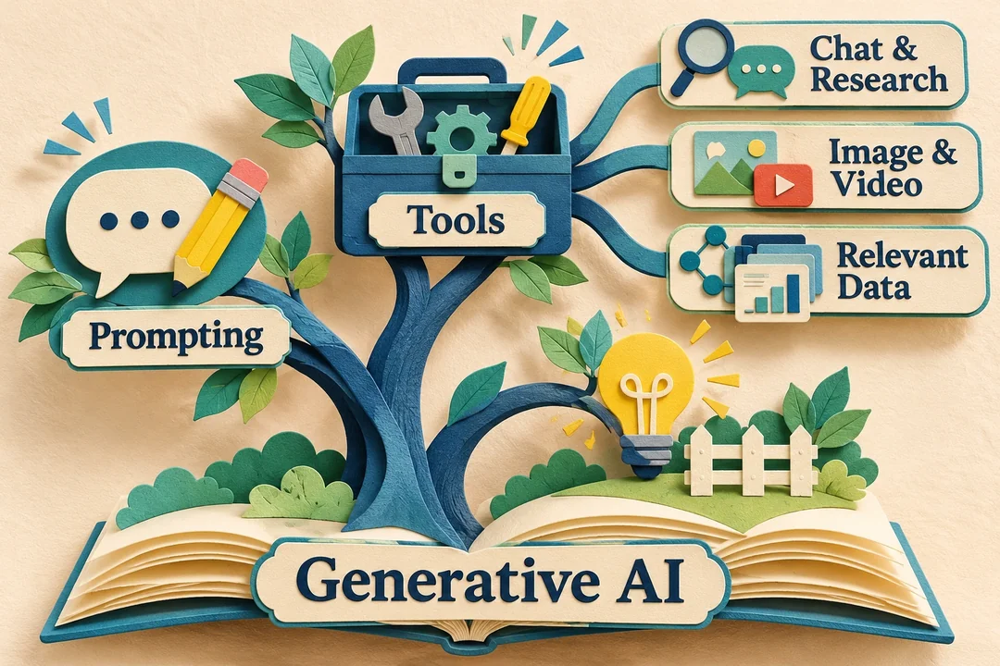

AI Career Roadmap
Tutorial Island
Tutorial Island is the shared starting point. Six bridges lead directly from its book and compass to the islands of Strategist, Rogue, Alchemist, Crafter, Sage, and Machinist.
Start readingSkills tree
A tree grows from a book labeled Generative AI. A speech bubble and pencil represent prompting, and a light bulb behind a fence suggests what AI can do and where its limits are. Three branches extend from the toolbox to chat and research, image and video generation, and relevant data.

- Generative AI fundamentals — Understand what generative AI is, what it can do, and where its limits are.
- Prompting — Learn to give AI clear, effective instructions.
- Tools — Practice chat and research, image and video generation, and incorporating the right data.
Foundation courses
| Provider or course | Format and focus |
|---|---|
| Google AI Essentials Specialization | Self-paced beginner lessons with videos, readings, and hands-on workplace exercises. Covers generative AI basics, productivity, prompting, and responsible AI use. |
| Google Prompting Essentials Specialization | Short videos and readings, with hands-on workplace activities. Tool-agnostic. |
| Google AI Professional Certificate | Newer option. Videos and hands-on work focused on the Google ecosystem. |
| Andrew Ng / DeepLearning.AI | Generative AI for Everyone and Prompting for Everyone. Video and hands-on practice. Tool-agnostic. |
| University of Helsinki — Elements of AI | Interactive text and exercises. Free, with a certificate. |
| Anthropic — Claude Academy | Claude 101, AI Fluency: Framework & Foundations, AI Capabilities & Limitations, and prompting documentation. Structured lessons and quizzes focused on Claude. |
| OpenAI | AI Foundations and Applied AI Foundations. Self-paced lessons, exercises, and assessment using OpenAI products. Free, with badges. |
| Vanderbilt University — Prompt Engineering Specialization | Videos and assignments on prompt patterns, techniques, and automations. In-depth prompting. |
| Google × Kaggle — 5-Day Gen AI Intensive | Hackathon or workshop format. The live intensive ran once, and recordings were available. |